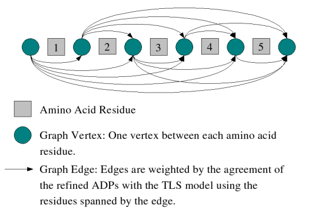

TLSMD uses a two-stage optimization algorithm to select the optimal 1-group, 2-group, 3-group, ..., n-group partition of a protein chain into multiple TLS groups. This optimization is performed for each chain in a structure independently, so the TLS groups selected for multiple homologous chains in a input structure may be compared without any bias (unless the structure was refined with NCS restraints or constraints). The first stage of the optimization feeds every possible residue sequence subsegment of the input protein chain to a subroutine which fits TLS model parameters to the refined ADPs of the atoms it contains. The subroutine returns the TLS model parameters and least-squares residual of the input structure's refined ADPs vs. TLS calculated ADPs. This information is temporarily stored in a database. Once the database for the chain is complete, it contains every possible sequence continuous TLS group for the chain; all that is needed is to select the TLS groups from the database which best fit the input structure's refined ADPs as measured by the TLS group's least-squares residual. This selection is performed by the second stage of the TLSMD optimization algorithm. To accomplish this, a graph is constructed spanning the residue sequence of the chain by placing a vertex between every residue in the sequence, as well as a source vertex before the first residue, and a destination vertex after the last residue in the chain(see Figure 1). Graph edges are then constructed for each TLS group in the database spanning the vertexes which correspond to the TLS group's residue segment. The edge cost, or weight, is the least-squares residual of the TLS group it represents. Once this graph is constructed, a single source shortest path algorithm (our own constrained version of Bellman-Ford) is used to find the least cost path from the source vertex at the beginning of the chain sequence to the destination vertex at the end of the sequence. The TLS groups corresponding to the edges used in the minimization path are those presented by TLSMD.
|  |
| Figure 1: TLSMD Graph Construction of a 5 Residue Protein |
|---|
The optimized TLS groups calculated by TLSMD from a isotropically refined structure may be used to further refine the structure with the TLS + restrained refinement mode of Refmac5. Given the number of TLS groups you would like to use for each chain, TLSMD can generate a special structure model file (PDBIN also called XYZIN) and TLS tensor file(TLSIN) you can use as input files to Refmac5. These files are generated specifically for Refmac5 refinement by splitting the temperature factor magnitude of each atom between the TLS model and individual atomic temperature factors. Because of this, the TLS model for refinement is different than the one used for motion analysis. To generate these input files, click on the Use Optimal TLS Groups with Refmac5 TLS Refinement web page which is on the root TLSMD Rigid Body Analysis page generated for your structure. After you have generated and downloaded these files, you may use them through either the CCP4i GUI interface, or by writing your own custom shell script which invokes Refmac5. Examples of both methods are described below.
Below is a screen shot of the CCP4i interface with the proper settings to perform refinement on structure 1X6O. The PDBIN file generated by TLSMD is 1X60_CHAINA_NTLS6.pdb, and the TLSIN file is 1X60_CHAINA_NTLS6.tlsin. This is a single-chain protein partitioned into six TLS groups for refinement. Notice that the Set initial Bfactors to option is not checked. This is important: if this option is set, it will override the Bfactors calculated by TLSMD and which are in the input PDB file. This will result in a poor and possibly unstable refinement.
If you prefer using a shell script to run Refmac5, below is a example using the same structure files shown in the example above.
#!/bin/bash
refmac5 HKLIN 1X60.mtz \
HKLOUT 1X60.OUT.mtz \
XYZIN 1X6O_CHAINA_NTLS6.pdb \
XYZOUT 1X60.pdb \
TLSIN 1X6O_CHAINA_NTLS6.tlsin \
TLSOUT 1X60.tlsout <<EOF
MAKE HYDR ALL
MAKE CHECK NONE
LABI FP=F SIGFP=SIGF FREE=FreeR_flag
REFI TYPE REST RESO 20.0 1.6
REFI RESI MLKF
REFI BREF ISOT
WEIG MATR 1.0
SCAL TYPE BULK
SCAL LSSC ANIS
SCAL MLSC
REFI TLSC 10
NCYC 10
MONI MANY
BINS 10
EOF
The table below shows the results of TLS refinement of 1X60 using 1 to 19 TLS groups selected by TLSMD.
| Num. TLS Groups | RFac | RFree | FOM | RMS Bonds | RMS Angle | RMS Chiral |
|---|---|---|---|---|---|---|
| 1 | 0.166 | 0.198 | 0.882 | 0.019 | 1.740 | 0.126 |
| 2 | 0.163 | 0.195 | 0.886 | 0.018 | 1.716 | 0.123 |
| 3 | 0.162 | 0.194 | 0.888 | 0.018 | 1.710 | 0.125 |
| 4 | 0.162 | 0.194 | 0.889 | 0.018 | 1.689 | 0.124 |
| 5 | 0.160 | 0.191 | 0.891 | 0.018 | 1.668 | 0.123 |
| 6 | 0.160 | 0.189 | 0.893 | 0.018 | 1.663 | 0.121 |
| 7 | 0.160 | 0.188 | 0.893 | 0.018 | 1.656 | 0.123 |
| 8 | 0.159 | 0.188 | 0.893 | 0.017 | 1.645 | 0.123 |
| 9 | 0.159 | 0.189 | 0.893 | 0.018 | 1.644 | 0.122 |
| 10 | 0.159 | 0.189 | 0.893 | 0.017 | 1.636 | 0.121 |
| 11 | 0.158 | 0.189 | 0.893 | 0.017 | 1.627 | 0.121 |
| 12 | 0.158 | 0.189 | 0.893 | 0.017 | 1.623 | 0.121 |
| 13 | 0.158 | 0.189 | 0.894 | 0.017 | 1.621 | 0.122 |
| 14 | 0.157 | 0.189 | 0.895 | 0.017 | 1.621 | 0.123 |
| 15 | 0.158 | 0.188 | 0.895 | 0.017 | 1.620 | 0.122 |
| 16 | 0.157 | 0.188 | 0.895 | 0.017 | 1.621 | 0.122 |
| 17 | 0.157 | 0.188 | 0.895 | 0.017 | 1.619 | 0.122 |
| 18 | 0.157 | 0.187 | 0.895 | 0.017 | 1.621 | 0.124 |
| 19 | 0.157 | 0.187 | 0.896 | 0.017 | 1.622 | 0.124 |
Last Modified July 7, 2005